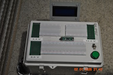
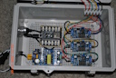
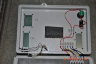

Programmer
Programmer is the name I gave to a custom-built bench tool that provides three different voltages (3.3, 5, and 12 volts) for powering three different breadboards and is useful for programming microcontrollers, sensors, and other electronics. It includes an ESP‑WROOM‑32 for testing ESP32 code. The bench includes a variety of connectors and sockets to accommodate different types of components, making it a versatile station for prototyping and testing circuits. With Programmer on hand, I can quickly set up and iterate on electronics projects without needing to hunt down separate power supplies or programmers.

Here is where components are connected and programmed.

Here is where we convert the 110V AC to 3.3, 5 and 12 V DC.

The connection between the guts and the lid.